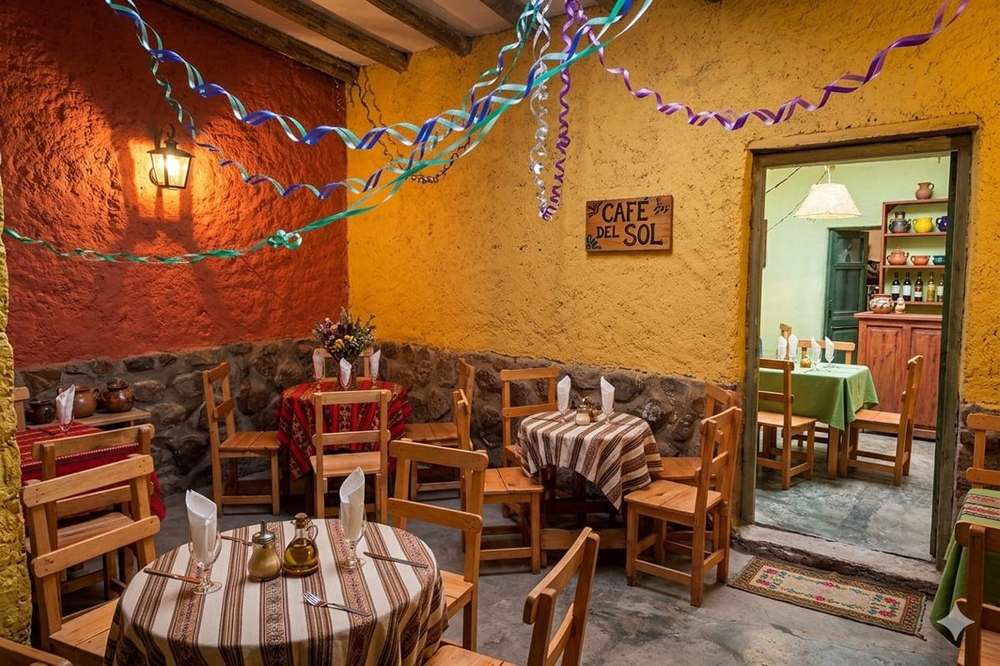

El patio
[Completar descripción.]
Venir a la casona es sentarse a comer en una casa de Humahuaca.

La identidad de la casona toma la arquitectura colonial de Humahuaca, los sabores que nacen de la tierra y la calidez de su gente.
Hay lugares que se visitan y lugares que se recuerdan. Nosotros queremos ser ambos.
[Completar descripción.]
[Completar descripción.]